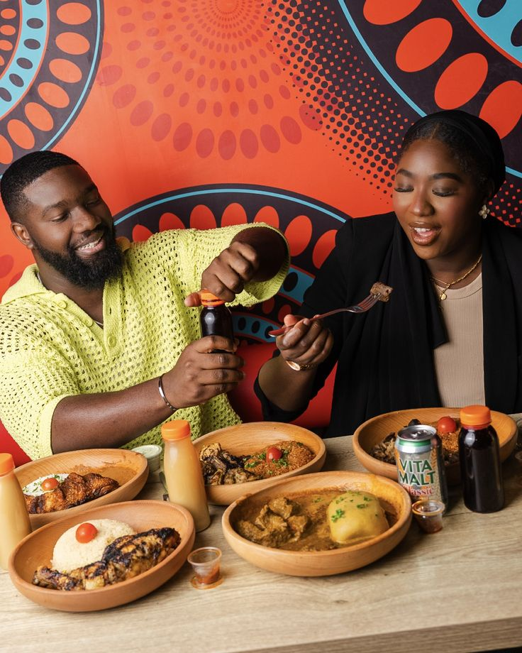

Plus qu'un plat mais un heritage. Il est le pilier de la gastronomie senegalaise. On contribue l'invention de ce plat a "PENDA MBAYE"
Un apercu de nos plats, notre equipes et de notre ambiance
Plus qu'un plat mais un heritage. Il est le pilier de la gastronomie senegalaise. On contribue l'invention de ce plat a "PENDA MBAYE"

La salle reflete la convivialité et le confort. Elle est climatisée avec des tables bien dressées bien coutume bien africain bien propre accompagner d'eau fraiche deja a votre disposition.

Dans la cuisine , l'équipe incarne l'excellence. Comme le montre si bien l'image , le dressage est effectué avec une precision d'orfevre. Le port des gants garantit une hygiéne irreprochable, tandis que la douceur des gestes témoigne du respect accordé aux produits et au futur convive.Ce petit souci du detail permet non seulement une presentation esthetique biensur mais ideale pour la photographie, renforcant aussi l'image d'une cuisine moderne et raffinée.

Ici l'equipe travaille dans un esprit de cohesion. La cuisine qui est lui meme souvent une affaire de transmission on melange ici la rigueur profesionnelle avec le savoir faire ancestral.

Comme on le dit si bien "LE CLIENT ESR ROI", Ils viennent vivre l'experience de la TERANGA qui pour eux le restaurant est une porte d'entrée sur la culture senegalaise. Avec une douceur et respect infini , l"excution se fait avec un sourire aux levres montrant bien evidemment que chaque plat est praparé specialement pour vous.

Decoration soignéé, équipe professionnelle, clientele respectée sest ce qui tranforme un simple repas en une veritable immersion culturelle senegalaise.